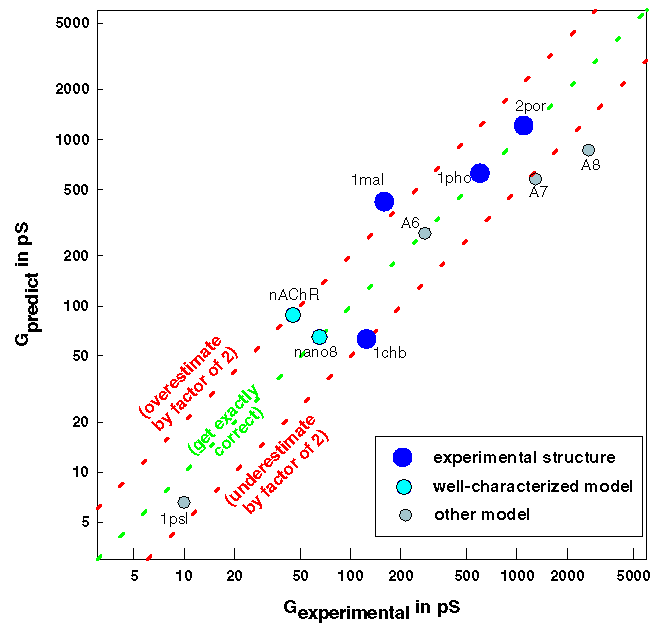

Pore Dimensions of Ion Channels: using HOLE to predict conductance


Using HOLE to predict conductance of ion channels in potassium chloride
solution

A HOLE calculation was used to predict the conductance
of each structure in potassium chloride
solution11. Results are shown
in comparison to the published experimental values for conductance.
The structures used to parameterize the empirical correction used
in the calculation are excluded from consideration.
The experimental (X-ray) structures considered are:
- 1mal: E. coli
maltoporin18,
- 1pho: E. coli phosphorin 1PhoE15
- 2por: Rhodobacter capsulatus porin16
- 1chb: Cholera toxin B subunit pentamer19
Well characterized models based on:
- nano8: nano tube forming cyclic octapeptide20
- nAChR: pore domain of the nicotinic acetylcholine receptor homopentameric
alpha7 in the open state5
Other models (with less well characterized structures):
- 1psl transmembrane domain of
phospholamban4.
- A6, A7, A8 alamethicin bundles with varying numbers of
helices11.
Oliver S. Smart
(last modified 23/9/96)